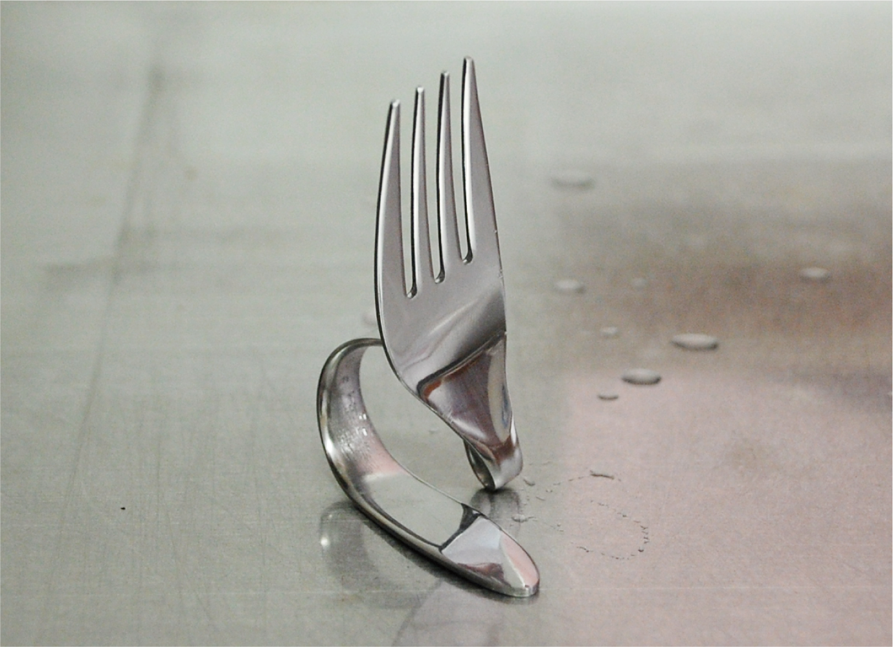
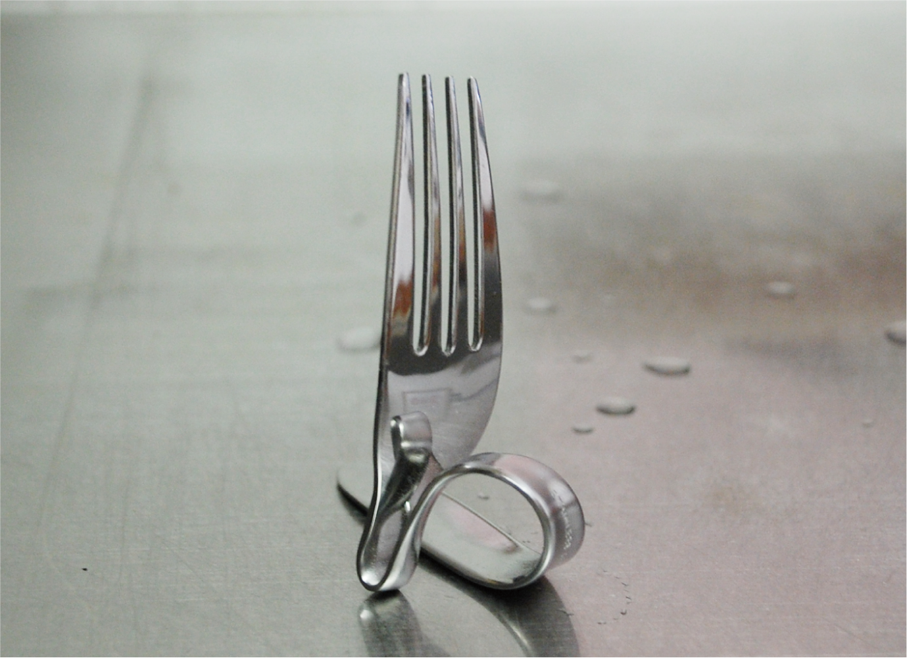

ナイフスタンド
2019.6
制作環境 illustrator
フォークを別の用途で使用できるよう変形させ加工しを施す。
フォークは普段飲食用として使用している為、キッチン周りで使用することには抵抗がなく使いやすいと考えた。
ナイフスタンドにした理由は、食事中ナイフを使用する際に使い途中での置き場に困った事があるため
フォークを置き場にすることで周りを汚さずにナイフを使用できるからだ。また、ナイフを洗った後の干す場所としても
使うことができる。
フォーク

